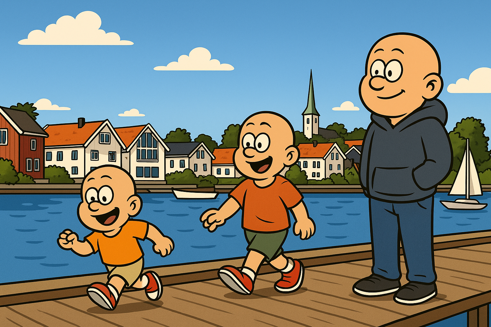
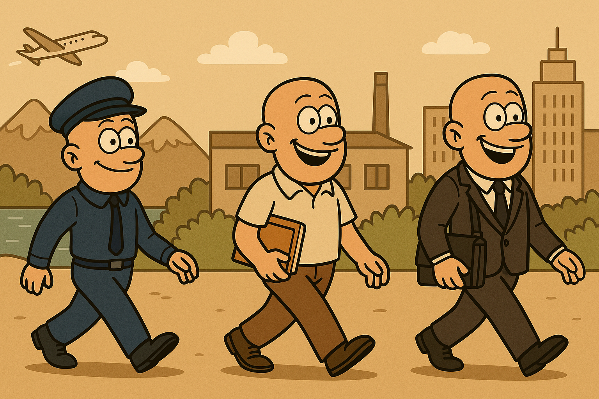

Kapittel 1
Oppvekst i Lillesand
Født og oppvokst i Lillesand. Her ble mye av grunnlaget lagt: nysgjerrighet, arbeidsvilje og gleden av å få ting til sammen med andre.
Leder • Forretningsutvikling • Sirkulærøkonomi • Teknologi
Over 20 år i operative lederroller, med tyngde innen drift, selskapsbygging, strategi og gjennomføring.

Et kort visuelt overblikk over reisen min.

Født og oppvokst i Lillesand. Her ble mye av grunnlaget lagt: nysgjerrighet, arbeidsvilje og gleden av å få ting til sammen med andre.

Bodø, Porsgrunn og Oslo ga nye perspektiver. Erfaringene utenfor Sørlandet gjorde meg tryggere, mer nysgjerrig og mer bevisst på hva slags leder jeg ønsket å bli.

Erfaring fra salg, bemanning og kundearbeid hos blant annet Adecco, Würth og Destinasjon Sørlandet. Dette lærte meg mye om relasjoner, service og forretning.

I LiBiR fikk jeg ansvar for strategi, drift, økonomi og organisasjon. 16 år i en rolle som krevde både oversikt, gjennomføringsevne og evne til å utvikle mennesker.

Jeg tok initiativ til nye selskaper og nye satsinger. Miljøpartner Sør ble bygget opp til en sterk aktør og senere del av Lindum Sør.

I Agder Miljø jobbet vi med biokull og nye miljøløsninger. Det var en krevende, lærerik og fremtidsrettet fase som også ga tydelige kommersielle resultater.
“En god leder står bakerst med oversikt — men det viktigste er å gi målgivende pasninger.”
Daglig leder med helhetlig ansvar for strategi, drift, økonomi og organisasjon.
Bygget opp selskap, skapte vekst og ledet frem til salg og fusjon.
Økte omsetningen 50 % på ett år i en krevende oppbyggingsfase.
Ledelse handler først og fremst om mennesker.
De beste løsningene kommer ofte fra de som jobber nærmest problemet.
Teknologi er et verktøy – ikke en strategi.
Kultur slår strategi når hverdagen blir krevende.
Ledelse skjer tett på – ikke på avstand.
Hvis du alltid gjør ditt beste, får du ofte folk med deg.
En operativ leder som liker å være tett på organisasjonen, skape retning og få resultater gjennom mennesker.
Med ro, struktur og tydelig kommunikasjon. Først skaffe oversikt, så prioritere og gjennomføre.
Lytter, analyserer, bygger relasjoner og etablerer tydelig retning før større grep tas.
Praktisk og nysgjerrig. Jeg bruker teknologi til å forbedre drift, beslutninger og arbeidsflyt.
Retning, struktur, organisasjonsbygging, forretningsutvikling og evnen til å gjøre strategi om til handling.
Vil du vite mer, ta en prat eller invitere til intervju, hører jeg gjerne fra deg.